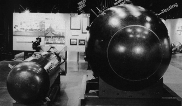
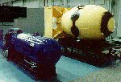
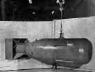
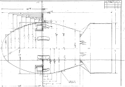
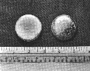
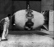
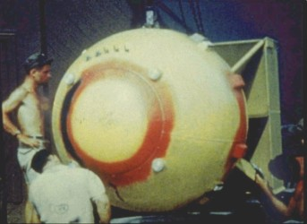

{kind=link}
{kind=link}
{kind=link}
{kind=link}
 Fat Man unit (71 K)
Fat Man unit (71 K)
In some sort of crude sense which no vulgarity, no humor, no
overstatement can quite extinguish, the physicists have known sin;
and this is a knowledge which they cannot lose.
J. Robert Oppenheimer
Concurrent with the preparations for the Trinity test, preparations were being made for the delivery of operational atomic weapons to Tinian Island in the Pacific for use against Japan at the earliest possible date.
Two weapon designs were available for use - the gun assembly Little Boy bomb that used uranium highly enriched in U-235, and the implosion assembly Fat Man that used plutonium.
At the National Atomic Energy Museum, Albuquerque, New Mexico, USA, representative weapon casings for the Little Boy and Fat Man type weapons are on display.
Little Boy and Fat Man (136 K)Little Boy and Fat Man (65 K)
After the detonation of the first plutonium bomb core in the Trinity test, the next weapon that was available was the completed Little Boy. It was this weapon that was dropped on Hiroshima. Another Little Boy weapon would not have been ready for months, for this reason only one Little Boy unit was prepared. In contrast many Fat Man bomb assemblies were on hand (without plutonium), and the actual "Fat Man bomb" delivered against Japan only existed when assembly of the Fat Man unit with the plutonium core was completed shortly before the mission.
Little Boy bomb before use in combat (75 K)
| Designation | Mk-I "Little Boy" | Mk-III "Fat Man" | Width | 28 in. | 60.25 in. | Length | 120 in. | 128 in. | Weight | 8,900 lb. | 10,300 lb. | Yield | 15 - 16 Kt | 21 Kt |
|---|
The second plutonium bomb core was delivered to Tinian for use in the first deliverable Fat Man weapon against Kokura arsenal only days after the arrival of Little Boy. Due to weather problems related problems, the Kokura primary target was scrubbed and the secondary target Nagasaki was bombed.
Fat Man Blue Print (73 K)
Fat Man bomb assembly being prepared for testing at the US Navy Saltwells ordnance facility near Inyokern, California (now China Lake Naval Weapons Center, near Ridgecrest, California):
Buttons of refined plutonium metal used in the second bomb core, dropped on Nagasaki (40 K)
Click here for a close up view of the plutonium buttons (145 K)
Below are images of the actual Fat Man bomb that was dropped on Nagasaki assembled and ready for combat.
Assembled Fat Man bomb at Tinian Island (27 K)
|

640x467, 56 K |
Fat Man bomb being prepared for loading on the B-29 Bock's Car |
| Click for big image (954x646, 114 K) |
{kind=link}
{kind=link}
{kind=link}